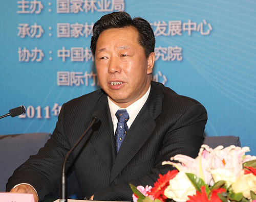

| 国家知识产权局肖兴威纪检组组长在全国林业知识产权高层论坛上的讲话 |
 肖兴威组长在全国林业知识产权高层论坛上讲话 |
各位领导，同志们： 大家上午好！ 今天很高兴参加林业知识产权高层论坛。借此机会，我受田力普局长委托，代表国家知识产权局，对本次活动的举办表示热烈祝贺！对国家林业局长期以来对知识产权局工作给予的大力支持表示衷心的感谢！ 今天是第十一个世界知识产权日。早在1999年，由中国和阿尔及利亚发起并提案，世界知识产权组织在2000年召开的第三十五届成员大会上通过决议，决定从2001年起，将每年的4月26日定为“世界知识产权日”。设立世界知识产权日旨在全世界范围内树立尊重知识、崇尚科学和保护知识产权的意识，营造鼓励知识创新和保护知识产权的舆论氛围。从2004年起，我国在每年“四?二六”世界知识产权日期间举行庆祝和宣传周活动，集中宣传知识产权工作。几年来，通过开展这项活动，增强了全社会知识产权意识，初步形成了以“尊重知识、崇尚创新、诚信守法”为核心的知识产权文化，营造了知识产权战略实施良好的舆论氛围，展示了中国政府和人民履行对国际公约庄严承诺的坚定信心、恪守国际贸易准则的不懈努力、知识产权事业取得的巨大进步和丰硕成果。 知识产权亦称无形财产权，主要是指公民、法人在文学、艺术和科学领域内从事智力劳动创造而获得的成果及其依法享有的权力。通常包括专利权、著作权（版权）、商标权、植物新品种、地理标志以及遗传资源等。为了保护这些成果，近二三百年来，西方国家各自建立了与之经济、社会制度相适应的法律体系，形成了知识产权制度。随着科学技术的发展、知识经济的兴起和全球化进程的加快，各国围绕知识产权展开了激烈竞争，知识产权逐渐成为增强国家科技实力、谋求国际竞争优势的重要举措，成为影响产业安全、科技安全、经济安全、国防安全的关键因素，同时也成为了国家的重要战略资源。就全球而言，知识产权不仅仅只涉及到科学发明、技术创造领域，而且已经成为国家外交、国际贸易、经济全球化的重要内容和手段，广泛地渗透到经济发展、社会进步、国家安全、国际关系等各个领域， 近年来，特别是金融危机爆发以来，新一轮创新活动势头强劲，绿色技术、生物技术、环保技术、空间技术、新能源、新材料技术发展迅猛，低碳经济、海洋经济、循环经济等，将成为世界经济新的增长点。这就决定了围绕市场、资源、人才、技术、标准等的竞争将会更加激烈。全球竞争的焦点就是抢占科学技术和知识产权的制高点。谁占领了制高点，谁就掌握了主动权。当前，在知识产权合作共赢作为国际关系发展主流的前提下，发达国家正在积极通过加强在战略性新兴产业的知识产权布局和运营来缓解金融危机带来的消极影响，在加快在本国及新兴市场国家的专利、标准、品牌等知识产权布局的同时，不断通过知识产权运营进行全球产业链整合，提升竞争优势。在新能源、新材料、低炭技术、生物医药、信息网络等领域，发达国家都占据着核心技术制高点，并且不时地挥舞着知识产权的大棒，制约发展国家的发展进程。着眼当前的国际形势及其发展趋势，我国在新一轮国际竞争中必将面临着发达国家知识产权竞争优势的更严重压力和更多的技术壁垒。 我国的知识产权制度，是上世纪八十年代初期开始逐步建立起来的，我们仅用30年的时间，完成了西方国家几百年走过的历程，这一飞跃性的进步，得到了国际社会的公认。改革开放以来，特别是加入世贸组织后，党中央、国务院对知识产权工作高度重视，各部门和各级地方党委政府对知识产权工作的高度关注，社会和民众的知识产权意识不断提高，知识产权工作在经济发展、社会进步中的地位实现历史性提升。2007年，党的十七大提出“实施知识产权战略”；2008年，国务院正式发布《国家知识产权战略纲要》；中央将知识产权战略同科教兴国战略和人才强国战略并列为国家发展的重要战略。近年来，各级政府以及有关部门大力推进知识产权战略实施，知识产权各项工作取得显著成效。知识产权在国家经济、文化、社会发展中的作用更加凸显。2010年，国内专利年申请量和商标注册年申请量均突破百万件。全年共受理专利申请122.2万件，世界排名第二，通过《专利合作条约》（PCT）途径提交的国际专利申请达12337件，申请量跃居世界第4位；受理商标注册申请107.2万件，世界排名第一。截至2010年底，我国拥有有效发明专利56万多件，商标有效注册460.4万件。地理标志、著作权、集成电路布图设计登记、植物新品种等申请量都有显著增加。可以看出，知识产权已经渗透在经济社会的各个方面、各个领域，并成为经济发展、文化建设、社会进步的基础条件和有力保障。“十二五”期间，我国的知识产权事业仍将快速发展，将为我国在物质科学、生命科学、空间科学、地球科学、纳米科学等领域抢占未来科技竞争制高点发挥引领作用；也将为我国现代农业、装备制造、生态环保、能源资源、信息网络、新型材料、公共安全和健康等领域取得新突破发挥助推作用。知识产权的创造、运用、保护和管理工作必上一个新的台阶。 林业是国家生态建设的主体，是生态文明建设的主力，是国家生态安全的核心。林业在向社会提供木材以及丰富的林产品的同时，更重要的是向社会提供生态产品。林业的发展速度和生态建设水平已经成为一个地方科学发展的重要标志之一。林业是一个非常广阔的和庞大的行业。它不仅涉及森林、林木及其植物、动物的科学发现和技术创新，还涉及到林产品加工、林业装备制造、林产化工、生态环保、能源资源、信息网络、国际贸易等工业、农业、信息技术领域，渗透到经济建设、社会建设、文化建设和生态文明建设等领域全过程。因此，林业知识产权工作是广域的、是全方位的，不仅仅是承担着林业植物新品种的认定、保护和管理的职责，还担负着全林业行业知识产权的创造、运用、保护和管理的任务。大力推进林业知识产权工作，是认真贯彻实施国家知识产权战略的需要，也是发展现代林业、建设生态文明、推动科学发展的必然选择。建设创新型国家，实现人与环境的协调发展，离不开生态环境的保护，也离不开对林业知识产权的保护。伴随经济社会快速发展，社会对生态产品的需求愈来愈强烈，改善生态和建设生态的任务也愈来愈繁重，同时，对林业知识产权事业的发展也提出了新的更高的要求。林业知识产权工作在林业发展和生态建设过程中的作用将会愈来愈突出。近年来，国家林业局高度重视，把知识产权工作作为促进林业自主创新、转变林业发展方式、带动林农增收致富的重要抓手，认真组织实施知识产权战略，不断加大工作力度，提升了林业知识产权创造、运用、保护和管理能力，各项工作取得了显著成效。林业知识产权数量稳步增长，林业植物新品种保护体系不断完善，林业知识产权转化运用成效显著，林业企事业单位运用知识产权的能力不断提高。今天，国家林业局在这里举行林业知识产权高层论坛，并精心组织了“林业知识产权宣传周”的各项活动。同时，为第二批全国林业知识产权试点单位授牌，开通《中国林业知识产权保护网》，发布《2010年林业知识产权年度报告》和《林业知识产权保护宣传手册》。这些活动的集中开展，很好地呼应了全国宣传周确定的“知识产权助推经济转型”主题，紧扣林业发展实际，内容丰富，意义重大。 林业知识产权工作的开展，需要相关部门、全社会齐力推进。国家知识产权局和林业局两部门的协作中，相互支持，联系密切，工作配合得很好，也结下了深厚情谊。我相信，今后的合作会更加紧密，林业知识产权工作，必将取得更大的成绩！国家知识产权局仍将一如既往地关注和大力支持林业知识产权工作。 最后，预祝本次活动取得圆满成功！谢谢大家！ |
资料来源：2011林业知识产权年度报告  20120428 20120428 |
关键词：林业政策 林业建设 科技 创新 知识产权 领导讲话 |
人物动态